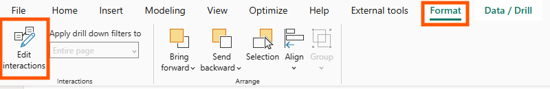
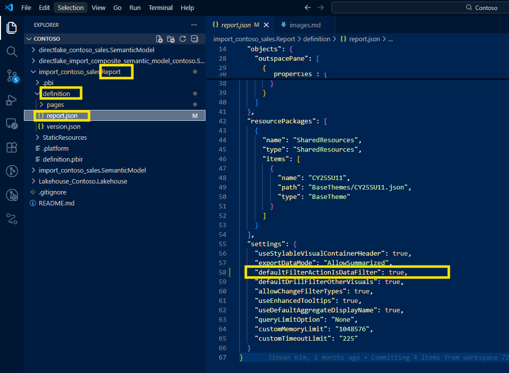
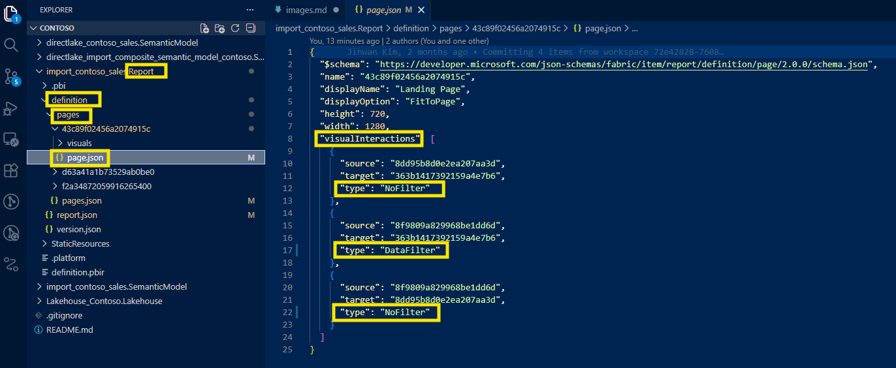

In this writing, I want to share how my perspective on Edit Interactions completely shifted after working with PBIR format. My plan was simple: configure visual interactions for a complex dashboard with multiple slicers. Instead, I discovered that what I thought was a UI problem had become a DevOps opportunity.
I was working on a dashboard where one slicer needed to filter everything except specific visuals - those summary KPI cards that should stay constant regardless of what users select. I also had another page where clicking certain charts shouldn't affect KPI cards at all. The requirements were clear, the logic was straightforward, but the execution? That was another story. I found myself clicking through visual after visual, changing Edit Interactions, clicking icons, moving to the next visual, repeating. The tedium was frustrating, but what came next changed everything.
The moment happened when I opened my first PBIR-format report and navigated to the page.json file. There it was: visualInteractions - laid out as clean, readable JSON. Every interaction override I had painstakingly clicked through in the UI was now structured configuration data. Microsoft has announced in a detailed post, PBIR will become the default Power BI Report Format, that the transition is imminent. That era of binary-only report development is officially ending.
What Are Edit Interactions? And Why They Matter
For those who work with Power BI reports daily, Edit Interactions are the mechanism that controls how selecting data in one visual affects other visuals on the same page. By default, when you click a bar in a chart or select a value in a slicer, Power BI automatically cross-highlights or cross-filters every other visual on the page. This default behavior works well for many scenarios, but not all.
There are three fundamental interaction types I can configure:
- Filter: Selecting an element applies a filter to the target visual, showing only related data
- Highlight: Emphasizes relevant data points while retaining the full data context
- None: The source visual's selections produce no effect on the target visual

In my case, I needed precise control. I had a dashboard where date slicers should filter all trend charts and tables, but deliberately not filter the year-over-year comparison KPI cards - those needed to show the full picture regardless of date selection. On another report page, I had a main chart where clicking data points should highlight related visuals, but absolutely should not affect the executive summary cards at the top. These weren't edge cases; these were thoughtful UX decisions. The Microsoft documentation on how to change visual interactions explains the standard approach, but what it doesn't tell you is how quickly this scales into a problem.
The Click-Heavy Reality: Before PBIR
Let me walk you through what configuring Edit Interactions looked like in the traditional .pbix workflow. According to the official documentation on changing how visuals interact, here's the process:
- Select the source visual (for example, a date slicer)
- Navigate to Format > Edit interactions in the ribbon
- Icons appear on ALL other visuals on the page
- Click the appropriate icon (filter/highlight/none) for EACH target visual
- Deselect the source visual and repeat for every other source visual that needs custom interactions
Now let me show you the mathematics of frustration. Imagine a report page with 10 visuals - not unusual for a business dashboard. You have one slicer that needs custom interaction settings with the other 9 visuals. That's a minimum of 9 clicks just for that one slicer. Now say you have 3 slicers that each need different interaction patterns. That's 27 clicks for one page. If your report has 5 pages with similar complexity, you're looking at 135+ clicks just to configure interactions across your report.
But the click count was just the surface problem. I realized this wasn't just tedious. This was unsustainable for enterprise reports with 15+ visuals per page and dozens of pages. The deeper issues were:
- No audit trail: What did I configure last week? No way to know without clicking through everything again
- No pattern replication: Built a perfect interaction setup on one page? Enjoy manually recreating it on the next eight pages
- No version control visibility: Binary .pbix files mean Git shows "file changed" with zero insight into what interaction settings actually changed
- Validation by repetition: The only way to verify all settings were correct was to click through every visual again, on every page
I remember spending an afternoon configuring interactions for a 5-page report, only to realize the next day that I had missed several visuals. There was no systematic way to audit what I had configured. The UI was the only source of truth, and the UI required clicking.
The First Discovery: defaultFilterActionIsDataFilter
When I started exploring PBIR format, my first discovery came at the report level. I noticed a setting in Power BI Desktop that I had used before but never really thought about: File > Options and Settings > Options > Report settings > "Change default visual interaction from cross highlighting to cross filtering."

Power BI's default behavior is cross-highlighting - when you select something, related data is emphasized while unrelated data dims but stays visible. This setting lets you change the default to cross-filtering instead - where only related data appears and everything else is removed from view. I had used this setting before, but what I hadn't seen was what it looked like in the PBIR format.
When I opened the report.json file in my PBIR project, I found this:
{
"settings": {
"defaultFilterActionIsDataFilter": true
}
}This line appears when the setting is checked (cross-filtering enabled). Here's what fascinated me: when the setting is unchecked (the default cross-highlighting), the line is completely omitted from the JSON file. This follows a common pattern in configuration files: omit default values, explicitly write only non-default configurations. This keeps files clean and makes deviations from defaults immediately visible.
This was my aha moment - the PBIR format wasn't just making files readable; it was following software engineering best practices for configuration management. Since cross-highlighting is Power BI's native default, only when you override it to cross-filtering does it get explicitly written to the configuration.
It was a small detail, but it signaled something bigger: Power BI was transitioning from a black-box binary format to a transparent, version-controllable, diff-friendly structure. And if they did this for report-level settings, what about page-level configurations?
The Second Discovery: visualInteractions Per Page
That question led me to the second discovery - and this is where everything clicked. I opened one of my report pages in the PBIR structure: ReportName.Report/definition/pages/[PageName]/page.json.

Inside the page.json file, I found the visualInteractions array. Here's what the structure looks like:
"visualInteractions": [
{
"sourceVisual": "abc123-slicer-guid",
"targetVisual": "xyz789-kpicard-guid",
"interactionType": "NoFilter"
},
{
"sourceVisual": "abc123-slicer-guid",
"targetVisual": "def456-chart-guid",
"interactionType": "DataFilter"
}
]Each object in this array represents one interaction override - a deliberate deviation from the default behavior. The structure is elegant:
sourceVisual: The GUID of the visual that triggers the interaction (like a slicer or chart)targetVisual: The GUID of the visual being affectedinteractionType: The type of interaction
The interaction types map directly to what you'd configure in the UI:
"NoFilter"= No interaction (the "None" icon in the UI)"DataFilter"= Cross-filtering (the filter icon in the UI)- There are additional types like
"HighlightFilter"based on visual capability
I realized this wasn't just transparency. This was code-writing-kind-of-configuration. Instead of clicking through the UI, I could now:
- See all interaction overrides in one file - no clicking required, just open the JSON
- Search for specific interaction configurations -
grep "NoFilter"shows every disabled interaction instantly - Validate settings without opening Power BI Desktop - read the file, verify the logic
I remember the moment I first opened a page.json file after spending an hour configuring interactions through the UI. Seeing all my carefully clicked configurations laid out as structured data felt like discovering the source code to a compiled program. Everything I had been doing manually through the interface was just manipulating this data structure. The UI was a layer on top; the JSON was the truth.
DevOps Transformation
Once I understood that visual interactions were structured data, DevOps workflows became immediately possible: version control, bulk editing, validation, and documentation. These weren't theoretical improvements; these were real changes to how I work with Power BI reports.
Version Control: Git Visibility Into Interaction Changes
Before PBIR, version control for Power BI was limited. The .pbix file is binary, so Git would show "file changed" with no details. If I configured interactions on a report, committed it, and a teammate asked "what changed?", I'd have to write it manually in the commit message - assuming I remembered every interaction I configured. Code reviews were impossible for interaction settings because there was no code to review.
After PBIR, every interaction override is visible in page.json. Git diff shows exactly what changed:
"visualInteractions": [
+ {
+ "sourceVisual": "barchart-abc123",
+ "targetVisual": "columnchart-xyz789",
+ "interactionType": "NoFilter"
+ },
{
"sourceVisual": "barchart-abc123",
"targetVisual": "columnchart-def456",
"interactionType": "HighlightFilter"
}
]Now I can write specific commit messages: "Disabled filtering from Barchart to Columnchart on Sales page." Code reviewers can see exactly which visual interactions changed and question whether the configuration makes sense. If something breaks, I can trace through Git history to see when an interaction was added or removed.
From a DevOps standpoint, this is foundational for collaborative report development. Interactions are no longer invisible changes buried in a binary file - they're trackable, reviewable, revertible configuration.
Bulk Editing: Configuration at Scale
The power of JSON is that I can manipulate it programmatically. I had 8 report pages with nearly identical layouts - same slicer structure, same chart types, same interaction logic. In the .pbix era, I would have spent 30+ minutes clicking through Edit Interactions on each of those 8 pages, manually replicating the same configuration pattern.
With PBIR, I configured the first page through the UI (because sometimes the visual editor is still the fastest way to get started), then copied the visualInteractions array from that page's page.json file. I wrote a simple PowerShell script that:
- Read the first page's visualInteractions array
- Mapped the visual GUIDs from page 1 to their corresponding GUIDs on pages 2-8 (based on visual names)
- Generated new visualInteractions arrays for each page
- Wrote them back to each page.json file
Minutes instead of an hour. The configuration was consistent, validated by code, and auditable in Git.
This opens the door to even more automation. Imagine Python or PowerShell scripts that generate visualInteractions based on visual naming conventions - "any slicer with 'Date' in the name should have NoFilter for any KPI card visual." That's not a far-off dream; that's a straightforward JSON transformation once the data is accessible.
Validation: Audit Without Clicking
In the old workflow, validating interaction configurations meant:
- Open the report in Power BI Desktop
- Go to each page
- Enable Edit interactions
- Click each visual to check its interaction settings
- Repeat for all pages
- Hope you didn't miss anything
There was no programmatic validation possible. With PBIR, I can now simply read the JSON files to verify configurations:
Direct file checking:
- Open
MyReport.Report/definition/pages/SalesPage/page.jsonin any text editor - Search for
"NoFilter"to see which interactions are disabled - Scan the
visualInteractionsarray to verify the logic matches requirements - No Power BI Desktop needed - just read the configuration
Simple search across all pages:
Using basic command-line tools, I can instantly audit interaction patterns across the entire report:
# Find all pages that have NoFilter interactions
grep -r "NoFilter" MyReport.Report/definition/pages/
# Count how many custom interactions each page has
grep -c "interactionType" MyReport.Report/definition/pages/*/page.jsonThis fundamentally changes validation. Instead of clicking through visuals hoping I didn't miss anything, I can directly inspect the source of truth. The JSON files show exactly what's configured.
For teams that want deeper validation, you can write simple scripts to check specific patterns:
- "Ensure all KPI cards have NoFilter from all date slicers across all pages"
- "Verify the main chart on the Overview page applies DataFilter to all detail visuals"
- "Check that no page has more than 20 custom interaction overrides (a complexity metric we track)"
If your team uses CI/CD pipelines, these checks can even run automatically on every commit - catching configuration errors before they reach production.
Documentation: Self-Documenting Configuration
Before PBIR, documenting visual interactions meant creating a separate Excel sheet or Word doc: "On the Sales page, the DateSlicer does not filter the YoY KPI cards." That documentation would go stale the moment someone changed an interaction without updating the doc.
With PBIR, the JSON structure is the documentation. When onboarding a new developer to my team, I can now point them to the page.json files and say "here's how interactions are configured" - it's code as documentation. The structure is self-explanatory, and because it's the actual source of truth (not a separate document), it never goes stale.
We've even started generating architecture diagrams from visualInteractions data - showing which visuals interact with which, creating visual maps of interaction logic. This was impossible when the configuration was trapped in binary format. The PBIR format announcement emphasized the move toward publicly documented, accessible report structures - and this is exactly why that matters.
A Tool I Built: Visual Interactions Management
This experience inspired me to take the next step. If PBIR made visual interactions transparent through JSON, could we make them visual again - but without the click burden? That question led me to build a tool that bridges the gap between visual management and PBIR's efficiency.
For teams managing complex interaction patterns, I've open-sourced a tool at https://github.com/JonathanJihwanKim/isHiddenInViewMode that brings visual management back to Edit Interactions - but with PBIR's power underneath.
The Visual Interactions feature in this app offers two view modes optimized for different scenarios:
- Matrix View: An N×N grid layout showing all visual pairs - perfect for pages with fewer than 20 visuals where you want to see everything at once
- List View: A table displaying only explicit overrides - automatically activates for pages with 20+ visuals to optimize performance and reduce visual clutter
You can configure four interaction types (Default, Filter, Highlight, None) with bulk operations that leverage the JSON structure beneath:
- Multi-select with Ctrl+Click: Select multiple cells and change them all at once
- Quick action buttons: "Disable All Interactions," "Enable All (Default)," "Set All to Filter," "Set All to Highlight"
I wanted to bridge the gap - visual management for configuration, PBIR format for version control and automation. The tool reads and writes the same page.json files that Power BI uses, giving me the best of both worlds. I can configure interactions visually with bulk operations, and the changes flow directly to Git-trackable JSON.
It's one of several features in the app - check it out if you're curious about other PBIR-enabled workflows.
Reflection and Closing
This experience left me with a new mental model: Edit Interactions aren't a UI feature - they're data. Once I saw them as structured configuration data, everything changed. Version control became natural. Bulk editing became obvious. Validation became automatable. Documentation became implicit.
PBIR format is transitioning to default in January 2026, and Edit Interactions are just one example of many features that benefit from JSON transparency. Model metadata, report themes, custom visuals configurations - they're all becoming accessible in the same way. The era of binary-only Power BI development is officially ending. DevOps workflows for Power BI are becoming first-class citizens in the platform.
I hope this inspires you to explore what other "UI features" in your Power BI reports are actually structured data waiting to be versioned, automated, and validated. The PBIR format isn't just a new file format - it's an invitation to bring software engineering discipline to analytics development.
If you're working with complex visual interactions, take 10 minutes to open your PBIR files and look at the page.json. You might discover your next DevOps improvement hiding in plain sight.